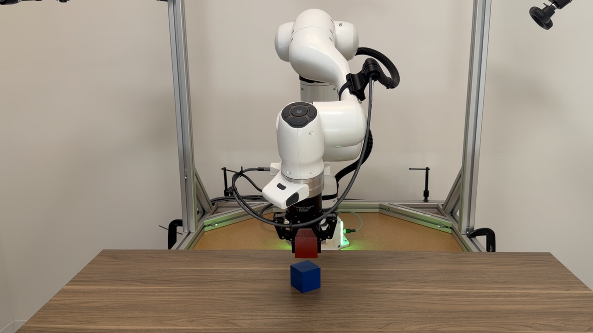
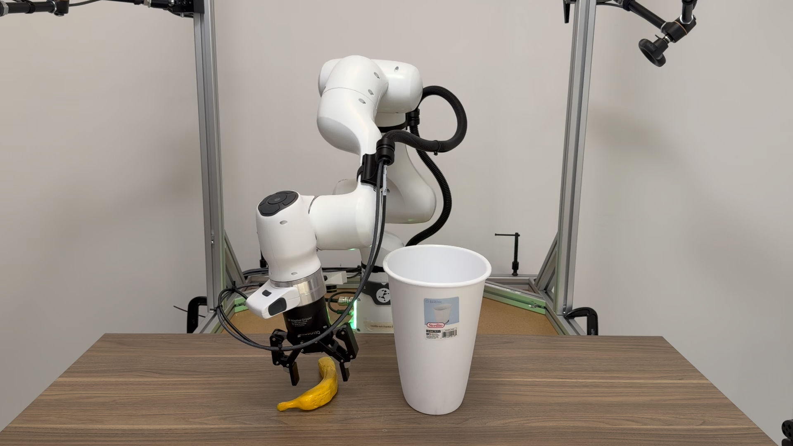
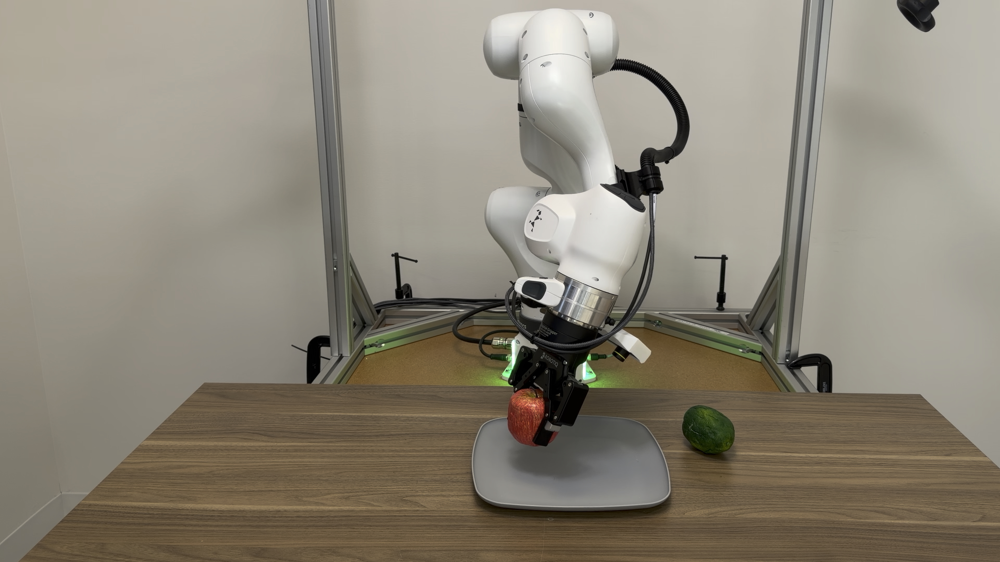

DemoStream: Batched Task-and-Motion-Plan Optimization for
Automated Learning from Demonstration



Real-World Policy Evaluation. DemoStream collected 75 real-world demonstrations and trained visuomotor policies with a success rate of 66%. Left: stack the red block on the blue block (Stack-Two). Center: drop the banana into the trash bin (Banana-Bin). Right: pack the apple and lime on the plate (Apple-Lime).
Abstract
Learning from demonstration is an effective strategy for endowing robots with manipulation capabilities but requires training on datasets comprised of massive amounts of demonstrations. Existing demonstration collection approaches either require constant human involvement, for example, via teleoperation, or are specialized for a single task. Task and Motion Planning (TAMP) systems are able to autonomously solve and therefore generate demonstrations for general-purpose tasks; however, learning from their demonstrations has proven difficult due to multi-modality in their solutions. In this work, we build on recent work leveraging GPU acceleration for TAMP and propose DemoStream, a TAMP system that optimizes demonstration quality in order to improve behavior cloning success rates. First, we introduce batched TAMP sampling operations along with a new TAMP algorithm that correspondingly performs batched constraint satisfaction in order to explore many solutions in parallel. We conduct simulation experiments ablating different action spaces, cost functions, and batch sizes to analyze the effect of these choices on downstream policy success rates. Finally, we show that we can leverage the safety guarantees of TAMP to directly collect real-world demonstrations at an average rate of 66 demos per hour.
Citation
This work is currently under anonymous double-blind review. A full citation will be added upon publication.
Anonymized project page.
Updated September 2026